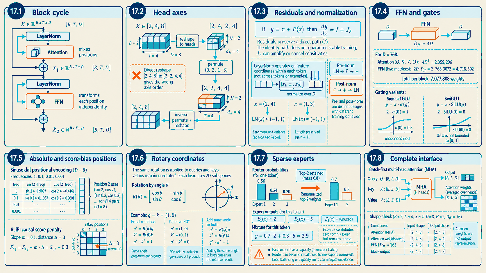
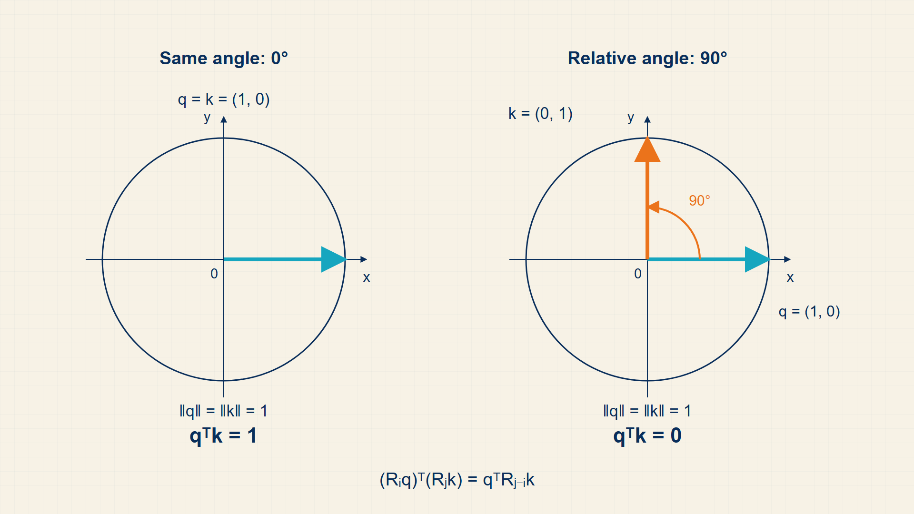
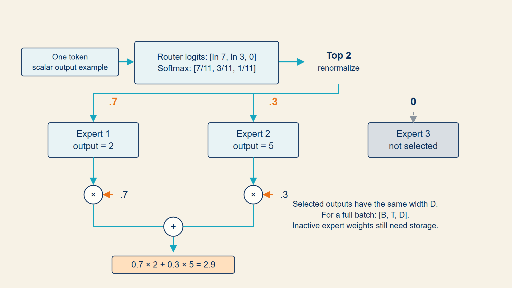
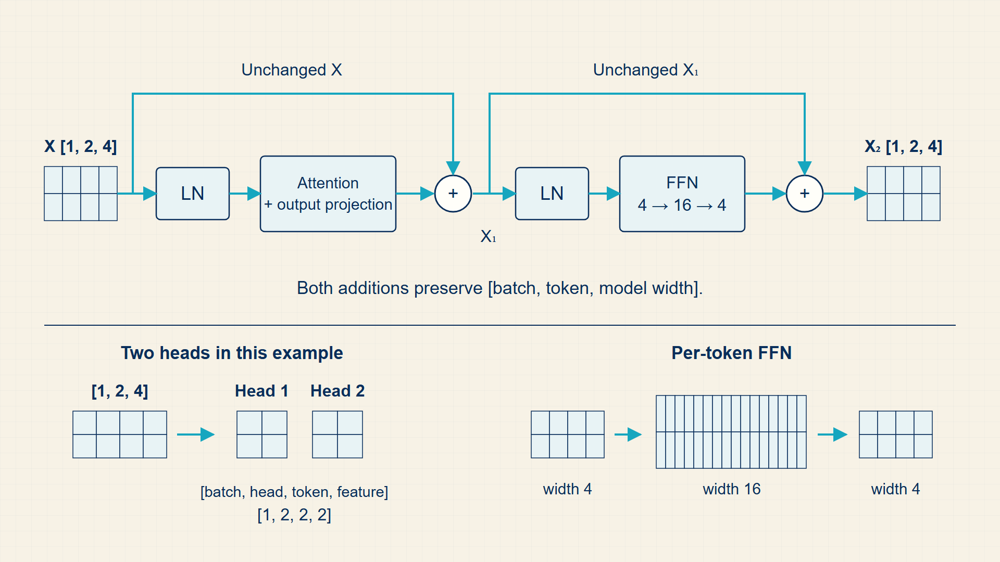

17 Transformer blocks: Context, features, and position
Attention combines information across positions, but its value mixture supplies only one transformation. A deep sequence model must also transform features within each position and preserve useful paths through many layers. Position information or position-dependent visibility is needed when order affects the task.
A transformer block combines these roles while maintaining compatible input and output dimensions. Its attention, normalization, and feed-forward choices can vary without changing those basic requirements.

17.1 One block cycle and its distinct operations
Replacing every token vector by an attention mixture can discard a useful part of the incoming representation. Adding the transformed result to that input instead lets a layer learn a change. A following nonlinear network can then construct features from the combined information.
A transformer is a neural sequence architecture that stacks attention-based layers with transformations at each position. Visibility rules decide which positions can supply information to a layer. A transformer block is one repeated layer containing attention, a per-position feed-forward transformation, normalization, and residual additions. A residual connection adds an operation’s output to its input, requiring compatible shapes. A feed-forward network, abbreviated FFN, applies the same learned nonlinear transformation independently to each token vector.
LayerNorm rescales each token using statistics across its feature coordinates and learned coordinate gains and biases.1 Section 17.3 derives that operation. A pre-norm transformer applies normalization before each attention or feed-forward branch.
In one pre-norm cycle, attention acts on normalized input vectors. Its output is added to the original vectors. The FFN acts on a normalized copy of that sum. The second residual addition combines this FFN output with that sum. Omitting dropout from this mathematical sketch gives
\[ \begin{aligned}X_1&=X+\operatorname{Attention}(\operatorname{LN}(X)),\\X_2&=X_1+\operatorname{FFN}(\operatorname{LN}(X_1))\end{aligned} \tag{17.1}\]
The input \(X\) and both outputs \(X_1,X_2\) have shape \([B,T,D]\). LN acts separately on every width-\(D\) token vector. The attention operation returns width \(D\) after its output projection, and the FFN returns that same width. Neither residual addition merges different positions or examples.
Token mixing combines information across sequence positions, as attention does. The FFN is a per-token transformation: changing one input position changes only that position’s FFN output. Attention can first make its input contain information from other positions.
Depth counts repeated blocks. Increasing depth composes further transformations and adds computation and saved training activations. It does not guarantee increasingly useful features. Dropout from §10.6 can also modify training activations, but is omitted here to keep the block cycle explicit.
Example: Compatible dimensions around the cycle
Take \(B=1\), \(T=2\), and \(D=4\). Both residual additions need branches of shape \([1,2,4]\). The attention branch must return that shape after combining information across positions.
An FFN can expand its input to \([1,2,16]\) and project it back to \([1,2,4]\). This is the example expansion \(16=4D\).
Conclusion: Both additions are dimensionally valid. Matching shapes establish compatibility, not numerical correctness, valid visibility, or successful training.
17.2 Head projections and axis order
One attention calculation uses one set of projections and produces one mixture at each query position. Several projection sets can learn different comparisons from the same input. An attention head is one such query-key-value calculation.
\[ \operatorname{head}_i=\operatorname{Attention}(XW_{Q,i},XW_{K,i},XW_{V,i}) \tag{17.2}\]
For head \(i\), the matrices \(W_{Q,i}\) and \(W_{K,i}\) map model width \(D\) to query/key width \(d_k\). Its value matrix maps \(D\) to \(d_v\). Each projection can read every input coordinate. Multi-head attention combines several such learned attention calculations on the same input.
In the common equal-width setup used here, there are \(H\) heads with head dimension \(d_h=D/H\). This choice requires \(D\) divisible by \(H\) and sets \(d_k=d_v=d_h\). Other projection arrangements can use different widths.
The heads’ outputs are joined on their feature axis. A learned output projection then mixes those joined coordinates and returns model width:
\[ \operatorname{MHA}(X)=\operatorname{concat}(\operatorname{head}_1,\ldots,\operatorname{head}_H)W_O \tag{17.3}\]
With equal head value width \(d_h\), the joined width is \(Hd_h=D\), and \(W_O\) has shape \([D,D]\). More generally, its input width is the total joined value width. The resulting \([B,T,D]\) output can enter the residual addition.
This equal-total-width arrangement has four dense projections: queries, keys, values, and the output. Each has \(D^2\) weights, so attention contributes about \(4D^2\) projection weights per block before biases. The count changes if query, key, value, or output widths differ. The \(8D^2\) feed-forward count in §17.4 will complete a common block estimate.
Conceptually, all query projections form \(Q\) of shape \([B,T,Hd_h]\). Reshape first separates the feature axis into head and within-head coordinates. Permutation then moves the head axis before the position axis:
\[ Q_{\mathrm{heads}}=\operatorname{reshape}(Q,B,T,H,d_h)\mathbin{.}\operatorname{permute}(0,2,1,3) \tag{17.4}\]
The intermediate shape is \([B,T,H,d_h]\). The permutation (0,2,1,3) gives \([B,H,T,d_h]\). The complete shorthand is
\[ Q\,[B,T,D]\to Q_{\mathrm{heads}}\left[B,H,T,\frac{D}{H}\right] \tag{17.5}\]
For \(B=2,T=4,H=2,d_h=4\), the sequence is \([2,4,8]\to[2,4,2,4]\to[2,2,4,4]\). A direct reshape to the final shape would group values incorrectly. It would not exchange the token and head meanings.
For example, one token’s projected row \((0,1,2,3,4,5,6,7)\) splits into head rows \((0,1,2,3)\) and \((4,5,6,7)\). The next token keeps its own two head rows. Permutation groups each head’s rows across tokens without swapping these assignments.
Each head produces \([B,T,d_h]\). Stacking all head outputs gives \([B,H,T,d_h]\). Permuting back to \([B,T,H,d_h]\) and joining the last two axes restores \([B,T,D]\) before \(W_O\).
Now extend §17.1’s \(B=1,T=2,D=4\) example with \(H=2\) heads of width two. Their collective output has shape \([1,2,2,2]\), and joining head features restores \([1,2,4]\). Both split and permuted shapes happen to be \([1,2,2,2]\). Equal axis lengths conceal a wrong rearrangement. The meanings and indexed values still change under permutation.
Conclusion: Learned projections define different heads, and axis rearrangement keeps their calculations separate. Extra heads do not by themselves establish better predictions or show which linguistic relationships each head represents. Their outputs, width, and training objective must be assessed together.
17.3 Residual derivatives and normalization within a token
Composing many transformations repeatedly changes vector scales and derivative paths. A residual sum provides a direct dependency on the incoming vector, while normalization controls one branch’s input scale.
For \(y=x+F(x)\), the Jacobian is \(I+J_F\). The identity term comes from the direct input path. It supplies an additional gradient route, but the total can still amplify or cancel sensitivities. In a pre-norm branch, the transformed path also includes the normalization derivative:
\[ x_{l+1}=x_l+F(\operatorname{LN}(x_l)) \tag{17.6}\]
Here \(l\) identifies a layer, and \(F\) maps a normalized width-\(D\) vector back to width \(D\). If a scalar residual coordinate is 2 and its supplied branch output is 0.3, the sum is 2.3. This checks addition without claiming that normalization of a single coordinate produced the branch value.
For a token vector \(x\in\mathbb R^D\), the index \(j\) runs across its \(D\) feature coordinates. LayerNorm uses mean \(\mu=D^{-1}\sum_j x_j\) and population variance \(\sigma^2=D^{-1}\sum_j(x_j-\mu)^2\):
\[ \operatorname{LN}(x)=\frac{\gamma(x-\mu)}{\sqrt{\sigma^{2}+\varepsilon}}+\beta \tag{17.7}\]
The learned gain \(\gamma\) and bias \(\beta\) each have shape \([D]\) and act coordinatewise. A positive \(\varepsilon\) stabilizes the denominator. Statistics are calculated within each token, not across batch examples or sequence positions. This differs from normalization using batch statistics.
For \(x=(2,4)\), the mean is 3 and variance 1. With unit gain and zero bias, the centered values are \((-1,1)\). Division by \(\sqrt{1+\varepsilon}\) gives the normalized values. The separate vector \((1,3)\) has mean 2 and the same variance and centered values. Neglecting a small \(\varepsilon\) gives approximately \((-1,1)\) in both examples.
RMSNorm, root mean square normalization, omits mean subtraction and divides by the square root of the mean squared coordinate value:2
\[ \operatorname{RMSNorm}(x)=\frac{\gamma x}{\sqrt{\operatorname{mean}_{j}(x_j^{2})+\varepsilon}} \tag{17.8}\]
The coordinate index is \(j\), \(\gamma\) is a learned width-\(D\) gain, and \(\varepsilon>0\) protects a small denominator. For \(x=(3,4)\), the mean square is \(12.5\). Neglecting \(\varepsilon\), the denominator is \(\sqrt{12.5}\approx3.535534\), or 3.536. Unit gains give approximately \((0.848528,1.131371)\).
Uniform positive rescaling preserves a vector’s direction. Learned coordinate gains need not be uniform or positive, so full RMSNorm need not preserve direction. Both normalizers keep the token and batch axes, while changing coordinate values.
A post-norm transformer instead normalizes after adding the branch:
\[ x_{l+1}=\operatorname{LN}(x_l+F(x_l)) \tag{17.9}\]
This is the original transformer’s ordering.3 If the residual sum is \((1,3)\), centering yields \((-1,1)\) before denominator scaling, learned gain, and bias. Pre-norm leaves its direct residual path outside that normalization. The two arrangements have different derivative paths, rather than interchangeable execution order.
The pre-norm branch follows the rule in §17.1: normalize the branch input, transform it, and add the result to the incoming representation. The indexed residual rule describes the next representation. An autograd implementation can calculate it without modifying the input tensor in place. Replacing LayerNorm with RMSNorm gives the corresponding pre-RMSNorm variant. Neither variant guarantees stable training at arbitrary depth.
17.4 Per-position expansion and nonlinear gates
Attention has combined information from other positions. A token’s coordinates can now encode interactions that require a nonlinear transformation before the next layer uses them. The FFN performs that transformation at each position with shared parameters.
For one column vector \(x\in\mathbb R^D\), an ordinary two-layer FFN is
\[ \operatorname{FFN}(x)=W_2\phi(W_1x+b_1)+b_2 \tag{17.10}\]
The first map produces intermediate width \(D_{\mathrm{ff}}\), the activation \(\phi\) acts there, and the second map returns width \(D\). Biases have widths \(D_{\mathrm{ff}}\) and \(D\). One common example uses \(D_{\mathrm{ff}}=4D\):
\[ W_1\in\mathbb{R}^{4D\times D},\quad W_2\in\mathbb{R}^{D\times4D} \tag{17.11}\]
For \(D=768\), this gives intermediate width 3072. The two matrices then contain \(8D^2\) parameters before biases. This explains why an FFN can contribute substantial per-token computation and storage. The factor four is a design choice, not a requirement of attention.
Adding the \(4D^2\) attention-projection weights from §17.2 gives about \(12D^2\) weights for one dense block with this FFN. For \(D=768\), that is \(12(768)^2=7{,}077{,}888\) weights per block before biases and normalization parameters. Twelve such blocks contribute about 84.9 million weights. A vocabulary embedding has \(VD\) entries, and an untied output head adds \(VD\) weights. Tying the head reuses the embedding table. These are parameter counts, not bytes or measured execution time. §19.4 uses the whole-model count for a training-compute estimate.
The scalar check uses \(x=1\), \(W_1=2\), \(b_1=0.5\), identity activation, \(W_2=3\), and \(b_2=1\). It gives \(3(2+0.5)+1=8.5\). Identity activation makes this particular example affine. A nonlinear activation supplies the additional representational capacity described in Chapter 12.
GELU, compared with ReLU and SiLU in §12.2, uses
\[ \operatorname{GELU}(x)=x\Phi(x) \tag{17.12}\]
Here \(\Phi(x)\) is the probability that a standard normal random variable is at most \(x\). The activation multiplies the input by this smooth cumulative probability. It is not a random draw. At zero, \(\Phi(0)=0.5\) and GELU is zero. At one, GELU is approximately 0.841345. Software can implement this expression or a declared approximation.
A gated linear unit, abbreviated GLU, instead combines two learned projection branches by multiplying one by a sigmoid of the other. Let the linear branch be \(a=W_ax\) and gate projection \(b=W_bx\). Ordinary GLU gives \(a\odot\sigma(b)\) before its output projection.
SiLU is \(\operatorname{SiLU}(b)=b\sigma(b)\), also called Swish with parameter one. SwiGLU replaces GLU’s sigmoid gate by this SiLU-transformed branch:4
\[ \operatorname{SwiGLU}(x)=W_c\!\left[(W_a x)\odot\operatorname{SiLU}(W_bx)\right],\quad\operatorname{SiLU}(u)=u\sigma(u) \tag{17.13}\]
Both \(W_a\) and \(W_b\) have shape \([D_{\mathrm{ff}},D]\). Their elementwise product has width \(D_{\mathrm{ff}}\), and \(W_c\) has shape \([D,D_{\mathrm{ff}}]\). Biases are omitted in this example. There are three projection matrices, so matching an ordinary FFN’s parameter budget may require a different intermediate width.
Example: The same projected values under two gates
Let the linear branch be \(a=2\) and the gate projection \(b=0\). Sigmoid GLU gives \(2\sigma(0)=2(0.5)=1\) before the output projection.
For SwiGLU, \(\operatorname{SiLU}(0)=0\sigma(0)=0\). Its branch product is \(2(0)=0\) before the same output projection.
Conclusion: The result 1 belongs to the sigmoid-gated GLU. SwiGLU includes the gate projection itself as another factor and gives zero for these inputs. SiLU values are not bounded between zero and one.
The FFN acts independently on each position, even when its input contains contextual information. It does not itself establish the order of those positions.
17.5 Absolute positions and relative score biases
The strings dog bites man and man bites dog contain the same words but express different relationships. A block needs information about position or directional visibility to distinguish their roles.
Without position features or a position-dependent mask, self-attention is permutation equivariant: permuting input rows permutes its output rows in the same way. It does not turn all token contents into identical vectors. Shared per-position FFNs and normalization preserve this symmetry too. A causal mask itself supplies order structure, so the unrestricted statement does not apply to a fixed causal triangle.
An absolute positional encoding adds a position vector to the token representation. A learned table gives one vector per supported index. A sinusoidal construction computes coordinates from sine and cosine functions at several frequencies. The original transformer adds those encodings to embeddings at the stack input, rather than requiring the same addition at every layer.5
The original sinusoidal rule specifies every coordinate, not just one example frequency. For even model width \(D\), pair \(j=0,\ldots,D/2-1\) uses \(\omega_j=10000^{-2j/D}\): coordinate \(2j\) is \(\sin(t\omega_j)\) and coordinate \(2j+1\) is \(\cos(t\omega_j)\) at position \(t\).6 With \(D=8\), the four pair frequencies are \(1\), \(0.1\), \(0.01\), and \(0.001\). Position 2 therefore starts with \((\sin2,\cos2)\) and then \((\sin0.2,\cos0.2)\). This schedule lets every position produce a vector without a learned position table. A token at a different index receives different added coordinates. Learned tables need a policy for unseen indices. The sinusoidal rule can calculate encodings for such indices, but that does not establish useful behavior beyond training lengths.
A relative position bias instead adjusts attention scores using the displacement between query and key. ALiBi, Attention with Linear Biases, applies a head-specific linear penalty to earlier positions:7
\[ \operatorname{score}_{i,j,h}=\frac{q_i^{T}k_j}{\sqrt{d_k}}-m_h(i-j),\quad j\le i,\quad m_h>0 \tag{17.14}\]
Here \(i\) is the query index, \(j\) the key index, and \(m_h>0\) the slope for head \(h\). The finite penalty applies only to permitted causal positions \(j\le i\). A separate causal mask blocks \(j>i\). With slope 0.1 and distance 3, the score is reduced by 0.3 before softmax.
Absolute encodings modify token representations. Relative biases modify pair scores. Both can make order affect the value mixture, with different parameters and extrapolation assumptions. A rotation of query and key coordinates supplies another relative-position mechanism.
17.6 Rotary coordinates and relative angles
The order problem in §17.5 can be represented without adding a separate score-bias table. A query-key comparison can instead depend on relative position. Rotary positional embedding, abbreviated RoPE, rotates paired query and key coordinates by angles determined by their positions.8
For one coordinate pair \((a,b)\) at position \(t\), choose pair frequency \(\omega\) and angle \(t\omega\). Rotation gives \((a\cos(t\omega)-b\sin(t\omega),a\sin(t\omega)+b\cos(t\omega))\). Different coordinate pairs use different frequencies, so the full vector carries several angle patterns.
Let \(R(\theta)\) denote that two-dimensional rotation matrix. For content query \(q\) at position \(i\) and content key \(k\) at position \(j\), the dot product is
\[ \bigl(R(i\omega)q\bigr)^T R(j\omega)k=q^T R((j-i)\omega)k \tag{17.15}\]
Transposing a rotation reverses its angle, and composing rotations adds their angles. Thus the common absolute-position contribution cancels, leaving relative angle \((j-i)\omega\). Query and key content remain in the expression, so the score is not a function of distance alone.
For a numerical check, choose \(q=k=(1,0)\). With both rotations at zero, their dot product is 1. Rotate one by \(90^\circ\) and leave the other at zero. The rotated vector is \((0,1)\), and the dot product becomes 0. Adding the same angle to both positions preserves their relative angle and that dot product.

The image shows one position-dependent rotation pattern. The query-key calculation above supplies the relative-angle relationship that the picture does not derive. Practical schemes set frequencies and may rescale them for different context ranges. Useful long-context behavior still requires evidence from the trained model and its position scheme.
Conclusion: Rotation preserves each pair’s length before any other transformation, while changing its alignment with differently rotated content. This supplies relative position to attention without guaranteeing extrapolation accuracy.
17.7 Selecting and weighting feed-forward experts
A larger FFN stores more parameters but also evaluates more work for every token. A mixture of experts, or MoE, can store several FFNs while selecting only some for each token. Each expert maps the token vector to a compatible output vector.
A learned router assigns expert scores to the token. Sparse activation means that only the selected subset runs for that token. The stored parameters of unselected experts still occupy memory.
One top-k routing expression is
\[ \operatorname{output}(x)=\sum_{e\in\operatorname{top}_k(\operatorname{router}(x))}\operatorname{gate}_e(x)\operatorname{expert}_e(x) \tag{17.16}\]
For input \(x\in\mathbb R^D\), the router returns one score per expert. A tie policy makes the selected top-k set precise. The gate coefficient weights each chosen expert’s returned width-\(D\) vector.
The normalized variant uses router matrix \(W_{\mathrm{gate}}\in\mathbb R^{E\times D}\) for \(E\) experts:
\[ g=\operatorname{softmax}(W_{\mathrm{gate}}x),\quad y=\sum_{e\in\mathcal{T}_{k}(g)}g_{e}^{(k)}f_{e}(x) \tag{17.17}\]
Here \(g\in\mathbb R^E\) contains softmax probabilities, and \(\mathcal T_k(g)\) contains the \(k\) selected indices. The selected coefficient is \(g_e^{(k)}=g_e/\sum_{j\in\mathcal T_k(g)}g_j\). Renormalization makes their sum one. This is one routing convention, not a requirement that every MoE renormalize in the same way.
For supplied router probabilities \((0.56,0.24,0.20)\) and \(k=2\), selection retains the first two with mass 0.8. Their coefficients become \((0.7,0.3)\). If their scalar outputs are 2 and 5, the mixture is \(0.7(2)+0.3(5)=2.9\). The third expert contributes nothing to this token’s output.
With a batch of token vectors \([B,T,D]\), router scores have shape \([B,T,E]\). Routing can choose different experts for different positions. Learned specialization need not correspond to distinct human topics.
Hard top-k membership changes discretely when score order changes. Within a fixed selected set, gradients pass through selected outputs and gate weights. Some training variants add learned-scale Gaussian noise to router scores before top-k selection. Noise and selection are separate operations. The noise can vary selections, but cannot guarantee balanced use.9
Load balancing encourages distribution of routed work across experts. One auxiliary penalty uses each expert’s batch importance, the sum of its gate coefficients. It penalizes squared coefficient of variation, the variance of those importance values divided by their squared mean.10
For an importance example, let four tokens each assign differentiable coefficients \((0.75,0.25)\) to two selected experts. The gate sums are \((3,1)\), with mean 2 and population variance 1. The squared coefficient of variation is therefore \(1/4\). Gate sums \((2,2)\) would give zero.
A chosen positive multiplier adds this penalty to the task loss. Away from changes in the selected set, these soft coefficients can supply router-score gradients. Both experts here receive four token assignments despite their unequal importance. Gate mass and assigned work therefore measure different quantities.
Renormalized top-one weights instead equal one for the selected expert. A penalty computed only from their hard counts is locally constant in scores away from selection changes. That penalty alone cannot provide the ordinary score gradient illustrated by the soft-coefficient example.
Expert capacity is the maximum number of token assignments an implementation admits to an expert within a routing batch. For a separate top-one case with four tokens, two experts, and capacity two each, assignment counts \((3,1)\) overflow the first expert by one. A design must specify dropping, rerouting, or another overflow policy. Those choices can alter the output and must not be hidden inside a speed claim.

The image connects a router with three experts but does not identify a selected subset or show measured loads. The numerical selection and capacity examples above supply those missing distinctions. Balancing penalties encourage a distribution of work rather than forcing identical probabilities or preventing every overloaded batch.
Conclusion: The example stores three possible expert paths but evaluates two for its token, then combines their outputs as 2.9. Sparse routing changes active work relative to evaluating all experts. Router computation, dispatch, communication, imbalance, and expert widths still determine its cost relative to a dense FFN.
17.8 A composed block and its output interface
The residual branch can fail even when every component works individually if head axes, mask dimensions, or returned objects are misinterpreted. A complete block check follows those interfaces through one forward calculation.
The block image shows a post-normalization ordering and omits the residual bypass arrows. The executable example below uses the pre-norm cycle from §17.1.

Its two residual stages follow the pre-norm block rule from §17.1. The attention and FFN branches both return \([B,T,D]\). The code implements a dense GELU FFN, not SwiGLU or expert routing. nn.Module stores the component layers, and nn.Sequential runs the FFN operations in their written order.
For nn.MultiheadAttention with batch_first=True, input shape is \([B,L,D]\) for queries and \([B,S,D]\) for keys and values in this equal-width setup. attn_mask must have shape \([L,S]\) or \([BH,L,S]\). The first is shared across batch and heads. The second allows separate masks. An arbitrary broadcastable four-dimensional score mask is not this argument’s contract.11
key_padding_mask separately has shape \([B,S]\). A Boolean True blocks an entry in both mask arguments. A floating mask adds to scores. If both arguments are supplied, their types should match. The compact layer below exposes only attn_mask, so it does not directly accept a separate padding mask.
The returned pair contains output vectors and attention weights. By default, the weights average over heads and have shape \([B,L,S]\). With average_attn_weights=False, they have shape \([B,H,L,S]\). These weights are not the output representations.
The runnable PyTorch 2.12 example uses random \([2,4,8]\) input, two heads, intermediate FFN width 16, and no dropout. It supplies no mask, so every position can attend to every other position. This is a block interface check, not a causal language-model run.
Code example: One pre-normalized transformer layer
import torch
import torch.nn as nn
class TransformerLayer(nn.Module):
def __init__(self, width=8, heads=2, hidden=16):
super().__init__()
self.norm1 = nn.LayerNorm(width)
self.attention = nn.MultiheadAttention(width, heads, batch_first=True)
self.norm2 = nn.LayerNorm(width)
self.ffn = nn.Sequential(
nn.Linear(width, hidden),
nn.GELU(),
nn.Linear(hidden, width),
)
def forward(self, x, attention_mask=None):
normalized = self.norm1(x)
mixed, weights = self.attention(
normalized,
normalized,
normalized,
attn_mask=attention_mask,
)
x = x + mixed
x = x + self.ffn(self.norm2(x))
return x, weights
x = torch.randn(2, 4, 8)
output, weights = TransformerLayer()(x)
print(x.shape, output.shape, weights.shape)The printed shapes are [2,4,8], [2,4,8], and [2,4,4]. In the conceptual layout introduced in §17.2, each projected array splits as \([2,4,8]\to[2,4,2,4]\) and permutes to \([2,2,4,4]\). PyTorch 2.12 can instead merge the batch and head axes as \([BH,T,d_h]\) on some calculation paths. This internal arrangement is not part of the public input-output contract. Each head returns width four per token, and recombining restores width eight for both residual additions.
The code omits position encodings, dropout, an output vocabulary head, and any training loss. Supplying a causal mask would restrict visibility but would not add those components. The example uses ordinary float32 defaults. Its random values check dimensions rather than a fitted model’s behavior.
For a language-model head, let \(x_{\mathrm{final}}\) be the final-normalized representation of shape \([B,T,D]\) and stored vocabulary weights \(W_{\mathrm{vocab}}\) have shape \([V,D]\):
\[ \operatorname{logits}=x_{\mathrm{final}}W_{\mathrm{vocab}}^{T} \tag{17.18}\]
The result has shape \([B,T,V]\), with no output bias in this sketch. An input embedding table can be tied to these weights if the model uses the same dimensions and vocabulary. That shared output path contributes gradients beyond the selected input rows, as §13.2 explained.
This head closes the path through a causal decoder-only transformer. Token IDs first select input vectors, and position information distinguishes their order. Each of \(L\) blocks keeps shape \([B,T,D]\) while causal attention limits every position to its available prefix. A final normalization after the last block is separate from the normalizations inside those blocks. The vocabulary head then produces \([B,T,V]\) scores. During training, eligible positions compare their scores with recorded following tokens as §8.5 established. During inference, only the scores at each row’s last valid position are needed to select the next token. Softmax converts those scores to probabilities, and a Chapter 7 selection rule returns an ID to append. The new prefix can enter the next step. Chapter 21 explains how a cache avoids recomputing all earlier attention keys and values.
Example: Shapes through one decoder step
Take two unpadded prompts of four IDs each, model width \(D=8\), vocabulary size \(V=10\), and two pre-norm blocks. The ID array has shape \([2,4]\). Token lookup plus position information produces \([2,4,8]\). Each block and the final normalization retain \([2,4,8]\). The vocabulary head produces \([2,4,10]\) logits.
The fourth position of each row supplies one \([10]\) score vector. Softmax and the chosen decoding rule produce one ID per row, shape \([2]\). Appending it makes each sequence length five. For padded prompts, the selected score must come from each row’s last valid position under the model’s input policy. That position can differ from the shared final storage column.
Conclusion: One inference step uses the final position’s scores to extend each prefix, while training can use earlier positions’ scores for aligned targets. The shape trace includes the final normalization and output head that the block-only code omits. Actual selected IDs require model scores and a decoding rule.
Conclusion: The block check preserves the residual axes and distinguishes representations from averaged attention weights. It does not establish correct task visibility by shape alone. Chapter 18 compares which positions each architecture may read and which outputs its objective supervises.
Chapter checkpoint
Why does reshaping [2,4,8] directly to [2,2,4,4] fail to specify a correct head split? What are the GLU and SwiGLU products for \(a=2,b=0\)? Does routing to two experts prove a speed improvement?
Answer: Correct splitting first gives [2,4,2,4], then permutation exchanges the token and head axes. GLU gives 1, while SiLU-based SwiGLU gives 0. Active expert count omits widths, routing, communication, and load imbalance, so the runtime effect requires measurement.
Ba, J. L., Kiros, J. R., & Hinton, G. E. (2016). Layer normalization. arXiv:1607.06450. The original method computes normalization statistics within an example and applies learned gain and bias.↩︎
Zhang, B., & Sennrich, R. (2019). Root mean square layer normalization. Advances in Neural Information Processing Systems, 32.↩︎
Vaswani, A., et al. (2017). Attention is all you need. Advances in Neural Information Processing Systems, 30, §§3.1 and 3.5.↩︎
Shazeer, N. (2020). GLU variants improve transformer. arXiv:2002.05202, equations 5–6. The Swish gate here uses parameter one.↩︎
Vaswani, A., et al. (2017). Attention is all you need. Advances in Neural Information Processing Systems, 30, §§3.1 and 3.5.↩︎
Vaswani, A., et al. (2017). Attention is all you need. Advances in Neural Information Processing Systems, 30, §§3.1 and 3.5.↩︎
Press, O., Smith, N. A., & Lewis, M. (2022). Train short, test long: Attention with linear biases enables input length extrapolation. International Conference on Learning Representations.↩︎
Su, J., et al. (2024). RoFormer: Enhanced transformer with rotary position embedding. Neurocomputing, 568, 127063.↩︎
Shazeer, N., et al. (2017). Outrageously large neural networks: The sparsely-gated mixture-of-experts layer. International Conference on Learning Representations, §§2 and 4. Noisy selection and importance penalties are particular design choices.↩︎
Shazeer, N., et al. (2017). Outrageously large neural networks: The sparsely-gated mixture-of-experts layer. International Conference on Learning Representations, §§2 and 4. Noisy selection and importance penalties are particular design choices.↩︎
PyTorch Contributors. (2026). MultiheadAttention. PyTorch 2.12 documentation. Mask and output shapes here describe batched input with
batch_first=True.↩︎